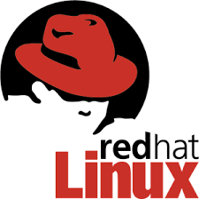
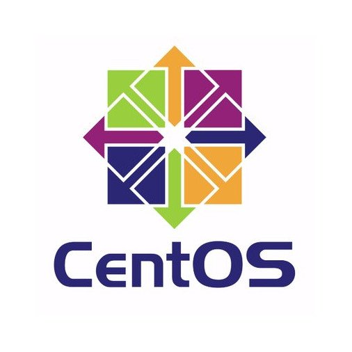

<div class="container mt-3">
  
  
  

  <ul class="mt-3 margen">
    <li>
      Investigate, install, configure and monitor all types of computer systems
      including related peripheral equipment
    </li>
    <li>
      Diagnose and resolve problems on all types of technology related hardware,
      software and transmission devices/media
    </li>

    <li>
      Assist in troubleshooting, diagnosis and repair of email system, backup
      system, Databases, Anti-Virus, Virtual Server and Desktop systems, and
      other related system solutions
    </li>
    <li>Resolving of trouble tickets</li>
    <li>
      Provide Tier 1 and 2 support; conduct remote and on-site technical support
    </li>
    <li>
      Coordinate use of technology resources with user’s needs; provide
      technical consulting services
    </li>
    <li>
      Coordinate, with vendors and staff, modifications and repairs to
      technology hardware and software
    </li>
    <li>
      Install software releases; document, report and follow-up with technology
      vendors regarding problems with and enhancements of modifications to their
      products and services
    </li>

    <li>Ensure security of data, equipment and facilities at all times</li>
    <li>
      Assist in planning, coordination and delivery of technology in-service
      sessions
    </li>
    <li>
      Analyze and troubleshoot event logs and server errors, tracking the issue
      to resolution
    </li>
    <li>
      Monitor systems usage to ensure the security of data and access privileges
    </li>
    <li>
      Maintain current knowledge regarding equipment, supplies, hardware or
      software
    </li>
    <li>
      Test new software solutions to insure the output conforms to
      organizational needs
    </li>
  </ul>
</div>
